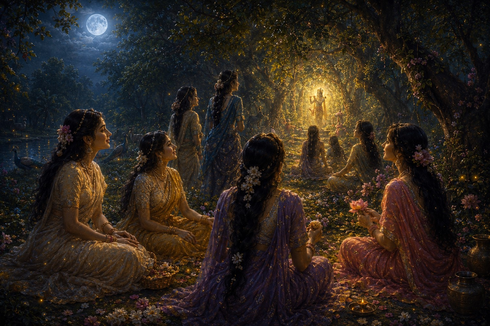
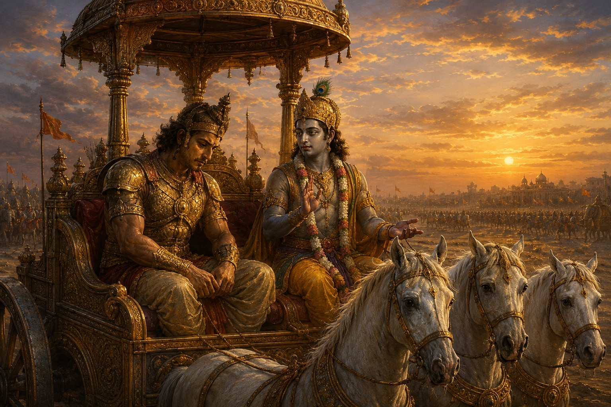

Distortion One
The Raas Leela: What It Actually Is
What you are seeing: individual souls (jivatmas) moving through the Vrindavan forest toward the divine light. Not women going to meet a man — souls in complete surrender to the paramatma. The Bhagavata Purana has called this the highest state of bhakti for 5,000 years.
The Raas Leela is probably the most misread episode in all of Hindu sacred literature. A young man in a forest at night, dancing with many women in the moonlight — the surface reading is obvious, and it is wrong. The tradition has been saying it is wrong for over a thousand years. The commentators of the Bhagavata Purana — Shridhara Swami in the 14th century, Jiva Goswami and Vishvanatha Chakravarti Thakura in the 16th and 17th centuries — identified the Raas Leela as allegory before any modern novelist arrived to claim the romantic interpretation as discovery.
The gopis are jivatmas — individual souls. Krishna is the paramatma — the universal soul, the divine ground of being. The Vrindavan forest at night is moksha — the state of liberation — and what the forest represents is what must be released to enter it. The gopis leave their homes, their families, their domestic duties, in the middle of the night, drawn by the sound of the flute. The soul, when it hears the call of the divine, leaves everything — not because those things don't matter, but because there is something that matters more.
The flute itself is the teaching. A flute is hollow — it produces music because it is empty. The ego that has been hollowed out, that has released its claim on outcome and identity, becomes an instrument through which the divine expresses itself. The gopis are not women in love with a man. They are souls that have achieved what the Bhagavata Purana describes as the highest state: complete absorption in the divine.

Krishna as paramatma — the universal soul, present as radiant light. The gopis as jivatmas in complete absorption. Read this image with what you now know: this is not a gathering of women around a man. It is the finite in the presence of the infinite. Centuries of Bhagavata Purana commentary have never read it any other way.
तन्मनस्कास्तदालापास्तदेशाः
तद्विचेष्टिताः ।
तदात्मानस्तन्निष्ठाः
कृष्णमेवानुजग्मुः ॥
Tan-manaskās tad-ālāpās tad-deśās tad-viceṣṭitāḥ / tad-ātmānas tan-niṣṭhāḥ Kṛṣṇam evānujagmuḥ
Their minds absorbed in Him, their speech about Him, their homes filled with Him, their actions for Him — their very selves dissolved in Him — they followed Krishna alone. (Bhagavata Purana 10.29.15 — the gopis' state of complete surrender)
Distortion Two
Radha, Rukmini, and Meera: Three Different Realities
Modern retellings of Krishna's story often collapse three entirely distinct theological figures into a single romantic narrative: Radha as the beloved, Rukmini as the wife, Meera as the devotee. The collapse is understandable as storytelling. As theology, it is wrong in three separate directions at once. Mathura and Vrindavan give you a way to feel the difference — because each figure has her own place, and each place tells you something the romantic framing never could.
Radha is a theological concept, not a historical character. She barely appears in the earliest layers of the Bhagavata Purana — her elevation to central prominence came through the work of the Gaudiya Vaishnava tradition, particularly Jayadeva's Gita Govinda in the 12th century and Chaitanya Mahaprabhu in the 16th. She was elevated because she represents something cosmic: the soul in perfect surrender to God. The relation of Radha to Krishna is not romance. It is the relation of the finite to the infinite, of longing to fulfillment, of the created to the creator. When you worship Radha-Krishna together, you are not worshipping a couple. You are worshipping the principle of divine love as the ground of existence. When you visit the Radha Rani temple in Barsana — 25 miles from Vrindavan, on a hill you climb to reach her — notice that she is the principal deity. You are going to her place, not his. She is not enshrined there as someone's beloved. She is there as the concept itself: the soul's complete surrender to God, given its own temple, on its own hill.
Rukmini is Krishna's queen — chosen by him, choosing him in return, their union ratified by dharma. She is not a consolation prize for the woman he couldn't have. She is a historical figure in the Mahabharata tradition with her own story, her own voice, her own episode — the letter she sends to Krishna before her arranged marriage to someone else, one of the most direct and extraordinary acts of agency in the entire tradition. Collapsing Rukmini into "the wife" while Radha gets "the love" erases a great and fully formed character. When you stand before the Dwarkadhish temple in Mathura — Krishna as king, not as the forest child — Rukmini is his queen here. Devotion and dharma are not in competition. Rukmini is what that looks like.
Meera Bai is a 16th century historical saint-poetess from Rajasthan. She was not a character in Krishna's story — she lived 4,500 years after him. She was a devotee who expressed her bhakti through poetry of extraordinary power, who defied her royal family's expectations, who walked away from palace life to follow her devotion. In Vrindavan, there is a temple dedicated to her — she came here in her later years, after decades of wandering, after the poetry that made her one of the great saints of the bhakti tradition. When you stand in that temple, you are standing in the story of a 16th century Rajasthani queen whose own journey brought her here. Meera Bai was not a character in Krishna's story. Krishna was a character in Meera Bai's story — and the tradition honored her enough to give her a temple in his city. Collapsing her into the Radha-Rukmini narrative doesn't just misread her theologically. It erases a great saint's own identity.
Distortion Three
The Bhagavad Gita: What It Was Delivered For
The Bhagavad Gita could only have been delivered on a battlefield. This is not an incidental detail. The entire structure of the teaching depends on the extremity of the situation. Arjuna is not having a minor crisis of confidence. He is standing between two armies, recognizing his teachers, his cousins, his friends on the opposing side, and collapsing — physically, dropping his bow, sitting down in his chariot, telling Krishna he cannot fight. This is not performance. This is a man facing a genuine moral impossibility.
BG 2.47 — the most quoted verse — is often reduced to a poster: "Do your duty, don't worry about results." What it actually says: you have a right to action, but never to the fruits of action; let not the fruits be your motive, but do not fall into inaction either. This is not comfort. This is the hardest instruction a human being can receive — act fully, with complete commitment, while releasing all attachment to outcome. Easy situations don't require philosophy of this precision.
BG 2.20: The soul is not born and does not die. It was never not; it will never not be. The body is shed like a worn garment. This verse was delivered to a man about to kill people he loves, and it was not delivered to make him feel better about killing. It was delivered to clarify what is actually happening — and is not happening — when a body ends.
Dharma, in the Gita, is not a universal rulebook. It is the specific right action available to you in your specific situation. What was dharma for Arjuna — a warrior king, with obligations to justice that required him to fight — is not dharma for someone in a different role and situation. The genius of the Gita is that it refuses to be a rulebook. It insists on precision. The right action is always specific to who you are, where you are, and what is actually at stake.

Arjuna and Krishna on the chariot — the Gita was delivered to one specific person in one specific crisis
कर्मण्येवाधिकारस्ते मा फलेषु कदाचन ।
मा कर्मफलहेतुर्भूर्मा ते सङ्गोऽस्त्वकर्मणि ॥
Karmaṇy evādhikāraste mā phaleṣu kadācana / mā karma-phala-hetur bhūr mā te saṅgo'stv akarmaṇi
You have a right to action alone, never to its fruits. Let not the fruits of action be your motive — and do not fall into inaction either. (Bhagavad Gita 2.47 — the verse most cited, and most often misread as passive acceptance)
The One-Way Door
Hindu Tolerance as Vulnerability
Modern retellings of Krishna's story — novels, films, reimaginings — are often compelling. They speak in contemporary language, they give voice to characters who were secondary in the original texts, they make ancient stories feel immediate. This is not nothing. Accessibility matters.
K.M. Munshi's Krishnavtara — seven volumes written across the 1960s and 70s — is perhaps the finest example of this genre in the 20th century. Munshi's Krishna is fully realized: his intelligence, his humility, his statecraft. The scene in which Krishna refuses the throne of Mathura after killing Kamsa — telling the elders "I know only the way of the cowherd, I am not fit for this responsibility" — is the kind of writing that stays with a reader. It captures something genuinely true about Krishna's character. It is also not in the Bhagavata Purana. It is Munshi's literary invention, written in the tradition's spirit, through his own formidable imagination. Both things are true simultaneously: it is a distinguished work of literature, and it is not scripture. The tragedy is not that Munshi wrote it. The tragedy is that two generations of readers received it as if it were.
The same problem appears when ancient episodes are read through a contemporary feminist or progressive lens — without first asking what that episode meant in its own context. Sita's agni pariksha — her emergence from fire unharmed — is not a story about a husband who didn't trust his wife. It is a demonstration of satya, truth-power: a woman whose inner integrity was so complete that fire could not touch her. The vastraharan in the Mahabharata — Draupadi's disrobing in the Kuru court — is not primarily a story about gender violence. It is about the catastrophic failure of every elder in that assembly to uphold dharma, and about divine protection arriving precisely when human institutions collapse. These episodes were placed where they were, encoded as they were, because they were teaching something specific about dharma, truth, and the consequences of adharma. Reading them as 21st century social commentary is not illumination. It is substitution.
The appropriate response is not outrage — it is knowledge. Know the original well enough to recognize when it is being carried accurately and when it is being replaced. The tradition has the resources. The commentaries are there. What is required is the decision to go to the source.